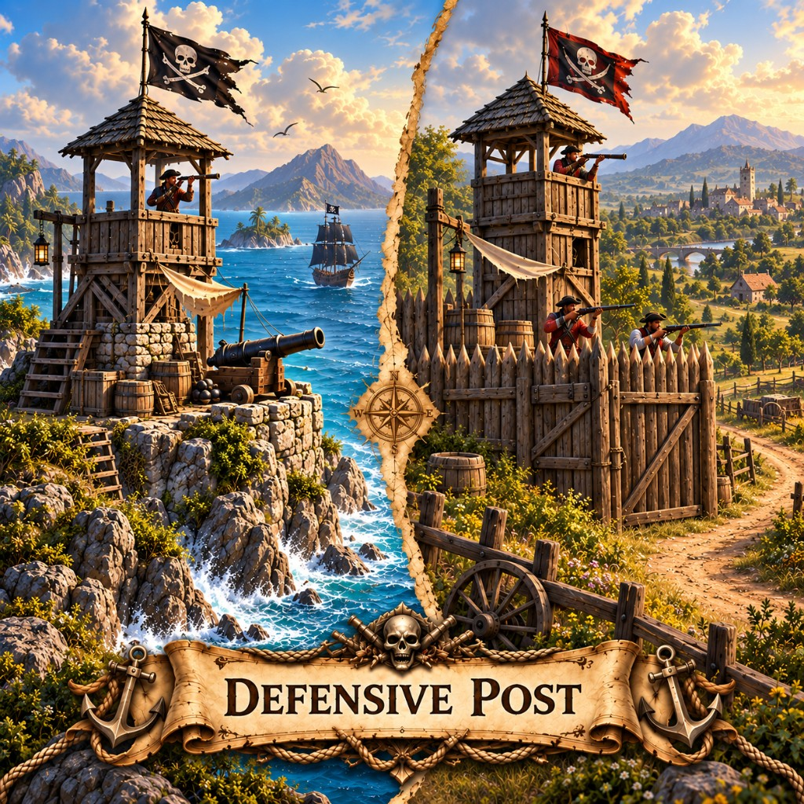

Defense Posts in Marauder's Sea slow enemy attacks on nearby borders. Cost, placement, and folklore.

A post is a promise: someone is watching this road or this cliff. Pirates paint them like lighthouses so friends can find the line, and enemies can dread it.
Buffs nearby borders (checkered ground). Enemy attacks are slower and take more casualties. Cheap scaling cost, cap $250,000. About 5 seconds to build.
Back to the building list or pick a map like X Marks the Spot and play this mobile strategy game in the browser.